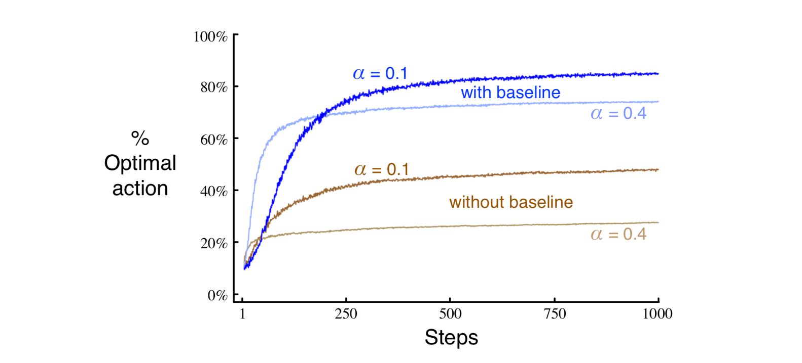

Reinforcement Learning Chap 2
Multi-armed Bandits
Bandit?
Nope！ Multi-armed Bandits problem is a very basic problem in online learning(not meaning internet education) which has overlapping part with reinforcement learning. Different from reinforcement learning, there is a strict and explicit mathematic framework to analyze the bound of regret and convergence rate of Multi-armed Bandits problem. Probability theory, Stochastic process and Markov chain are the tools to analyze bandits algorithms.
A k-armed Bandit Problem
You are facing repeatly with a choice among \(k\) different options and you will get corresponding reward after you make a choice. If all rewards of options are deterministic, the player must choose the option with highest value all the time. Even in a stochastic bandit problem, suppose we know the means and variances of rewards, the player still always choose the action with highest expected reward: \[q_{*}(a) \doteq \mathbb{E}\left[R_{t} \mid A_{t}=a\right]\] However, if we assume that you do not know the action values with certainty, although you may have estimates. We would like to use \(Q_{t}(a)\) to be an estimation of \(q_{*}(a)\) at time step \(t\). Since \(Q_{t}(a)\) is just an estimation, we might converge in a local optimum because of scarcity of knowledge of other actions if we take greedy policy. Apart from exploiting the information we have already, we also need exploring to attempt other potential good actions. Here is the idea of \(\epsilon\)-greedy algorithm. You can see some results with or without exploring. 
Incremental Implementation
From the previous section, we know the definition of \(Q_{t}(a)\), now we simplify it as follow, \[Q_{n} \doteq \frac{R_{1}+R_{2}+\cdots+R_{n-1}}{n-1}\] where \(n-1\) is the number of one action being chosen. However, this is not a good way to update \(Q_{n}\) since we have to summate all the rewards again and again when we are updating. A smaller way to update \(Q_{t}(a)\) is to utilize the relationship between \(Q_{n+1}\) and \(Q_{n}\). \[ \begin{aligned} Q_{n+1} &=\frac{1}{n} \sum_{i=1}^{n} R_{i} \\ &=\frac{1}{n}\left(R_{n}+\sum_{i=1}^{n-1} R_{i}\right) \\ &=\frac{1}{n}\left(R_{n}+(n-1) \frac{1}{n-1} \sum_{i=1}^{n-1} R_{i}\right) \\ &=\frac{1}{n}\left(R_{n}+(n-1) Q_{n}\right) \\ &=\frac{1}{n}\left(R_{n}+n Q_{n}-Q_{n}\right) \\ &=Q_{n}+\frac{1}{n}\left[R_{n}-Q_{n}\right] \end{aligned} \]
The above eqution is something we are very familiar with in Gradient Descent.\(\frac{1}{n}\) can be seen as a step size, and \(R_{n} - Q_{n}\) is the gradient. For example,
Upper-Confidence-Bound Action Selection
\(\epsilon\)-greedy policy forces the player to try non-greedy actions but without any preference(just uniformly pick) but we wonder if there is a better way to select among the non-greedy actions according to their potential for actually being optimal? Upper-Confidence-Bound(UCB) is a very classic and popular（with many many variants）algorithm in bandits problem. The difference between greedy and UCB algorithm can be seen as follow: \[ \text{greedy: } A_{t} \doteq \underset{a}{\arg \max }\left[Q_{t}(a)\right] \] \[ \text{UCB: } A_{t} \doteq \underset{a}{\arg \max }\left[Q_{t}(a)+c \sqrt{\frac{\ln t}{N_{t}(a)}}\right] \] We can see in the above action policies, we have the second term which is called upper confidence bound. \(c\) is a hyper-parameter, \(t\) is time step and \(N_{t}(a)\) is the number of choosing action \(a\). \(c > 0\) can be seen a degree of exploration. The more action \(a\) is chosen, the less UCB of this action \(a\) is so \(a\) has less chance to be chosen again. At the same time, \(t\) increases but \(N_t(a)\) does not; because \(t\) appears in the numerator, the uncertainty estimate increases. Eventually, actions with lower value estimates, or that have already been selected frequently, will be selected with decreasing frequency over time.
Gradient Bandit Algorithms
We mentioned Gradient Descent before, which is the foundation of machine learning(we all learned GD when we were having a ML course). In this section, we consider a numerical preference for each action \(a\), \[ \operatorname{Pr}\left\{A_{t}=a\right\} \doteq H_{t}(a) = \frac{e^{H_{t}(a)}}{\sum_{b=1}^{k} e^{H_{t}(b)}} \doteq \pi_{t}(a) \] We hope to update \(H_{t}(a)\) in a Gradient-Descent way. For example, \[ H_{t+1}(a) \doteq H_{t}(a)+\alpha \frac{\partial \mathbb{E}\left[R_{t}\right]}{\partial H_{t}(a)} \] where the measure of performance here is the expected reward: \[ \mathbb{E}\left[R_{t}\right]=\sum_{x} \pi_{t}(x) q_{*}(x) \] We call it Bandit Gradient Algorithm. The derivation of the gradient is quite complited but intesting: \[ \begin{aligned} \frac{\partial \mathbb{E}\left[R_{t}\right]}{\partial H_{t}(a)} &=\frac{\partial}{\partial H_{t}(a)}\left[\sum_{x} \pi_{t}(x) q_{*}(x)\right] \\ &=\sum_{x} q_{*}(x) \frac{\partial \pi_{t}(x)}{\partial H_{t}(a)} \\ &=\sum_{x}\left(q_{*}(x)-B_{t}\right) \frac{\partial \pi_{t}(x)}{\partial H_{t}(a)} \end{aligned} \] Where \(B_t\), call the baseline, can be any scalar that does not depend on \(x\). The last eqution holds because \[ \sum_{x}\frac{\partial \pi_{t}(x)}{\partial H_{t}(a)} = 0 \] Let's continue, \[ \frac{\partial \mathbb{E}\left[R_{t}\right]}{\partial H_{t}(a)}=\sum_{x} \pi_{t}(x)\left(q_{*}(x)-B_{t}\right) \frac{\partial \pi_{t}(x)}{\partial H_{t}(a)} / \pi_{t}(x) \] Then we can get the form of an expectation, \[ \begin{aligned} \frac{\partial \mathbb{E}\left[R_{t}\right]}{\partial H_{t}(a)} &=\mathbb{E}\left[\left(q_{*}\left(A_{t}\right)-B_{t}\right) \frac{\partial \pi_{t}\left(A_{t}\right)}{\partial H_{t}(a)} / \pi_{t}\left(A_{t}\right)\right] \\ &=\mathbb{E}\left[\left(R_{t}-\bar{R}_{t}\right) \frac{\partial \pi_{t}\left(A_{t}\right)}{\partial H_{t}(a)} / \pi_{t}\left(A_{t}\right)\right] \end{aligned} \] where here we have chosen the baseline \(B_{t}=\bar{R}_{t}\). Then we consider \(\frac{\partial \pi_{t}(x)}{\partial H_{t}(a)}\), utilizing standard quotient rule for derivatives: \[ \begin{aligned} \frac{\partial \pi_{t}(x)}{\partial H_{t}(a)} &=\frac{\partial}{\partial H_{t}(a)} \pi_{t}(x) \\ &=\frac{\partial}{\partial H_{t}(a)}\left[\frac{e^{H_{t}(x)}}{\sum_{y=1}^{k} e^{H_{t}(y)}}\right] \\ &=\frac{\frac{\partial e^{H_{t}(x)}}{\partial H_{t}(a)} \sum_{y=1}^{k} e^{H_{t}(y)}-e^{H_{t}(x)} \frac{\partial \sum_{y=1}^{k} e^{H_{t}(y)}}{\partial H_{t}(a)}}{\left(\sum_{y=1}^{k} e^{H_{t}(y)}\right)^{2}} \\ &=\frac{\mathbb{1}_{a=x} e^{H_{t}(x)} \sum_{y=1}^{k} e^{H_{t}(y)}-e^{H_{t}(x)} e^{H_{t}(a)}}{\left(\sum_{y=1}^{k} e^{H_{t}(y)}\right)^{2}} \\ &=\frac{\mathbb{1}_{a=x} e^{H_{t}(x)}}{\sum_{y=1}^{k} e^{H_{t}(y)}-\frac{e^{H_{t}(x)} e^{H_{t}(a)}}{\left(\sum_{y=1}^{k} e^{H_{t}(y)}\right)^{2}}} \\ &=\mathbb{1}_{a=x} \pi_{t}(x)-\pi_{t}(x) \pi_{t}(a) \\ &=\pi_{t}(x)\left(\mathbb{1}_{a=x}-\pi_{t}(a)\right) \end{aligned} \] Finally, we get \[ H_{t+1}(a)=H_{t}(a)+\alpha\left(R_{t}-\bar{R}_{t}\right)\left(\mathbb{1}_{a=A_{t}}-\pi_{t}(a)\right), \quad \text { for all } a \] Baseline \(B_t\) can shrink the gradient and make sure the preference \(H_{t}(a)\) will not change too soon. The experiment results show Gradient Bandit Algorithms with a baseline outperform without a baseline. 